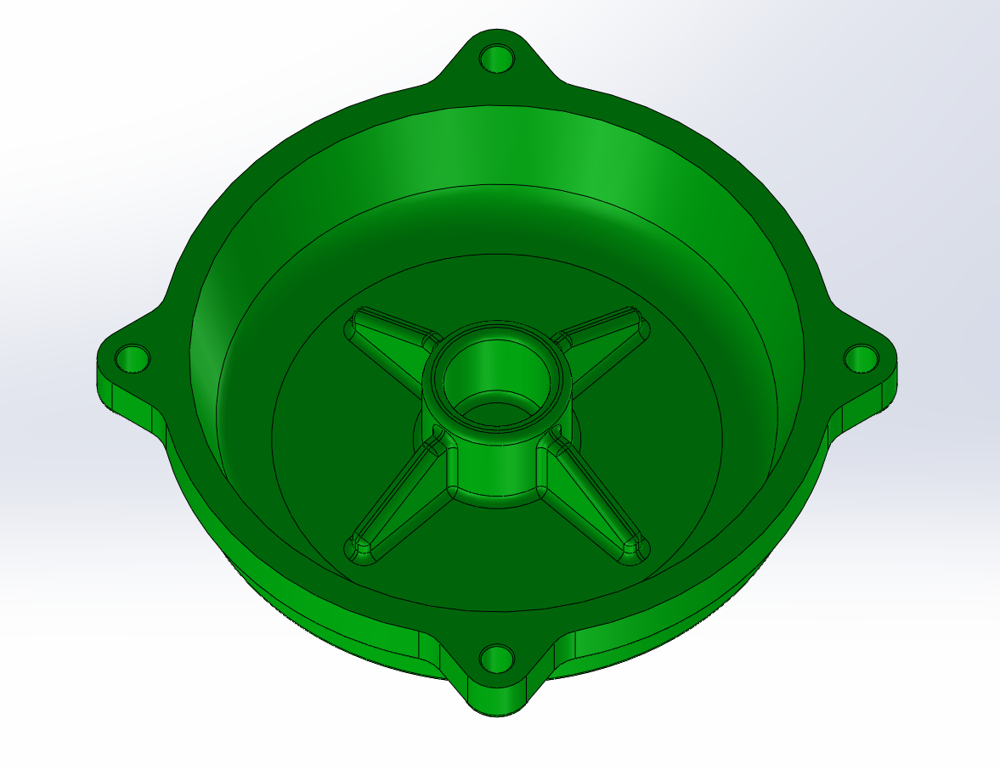
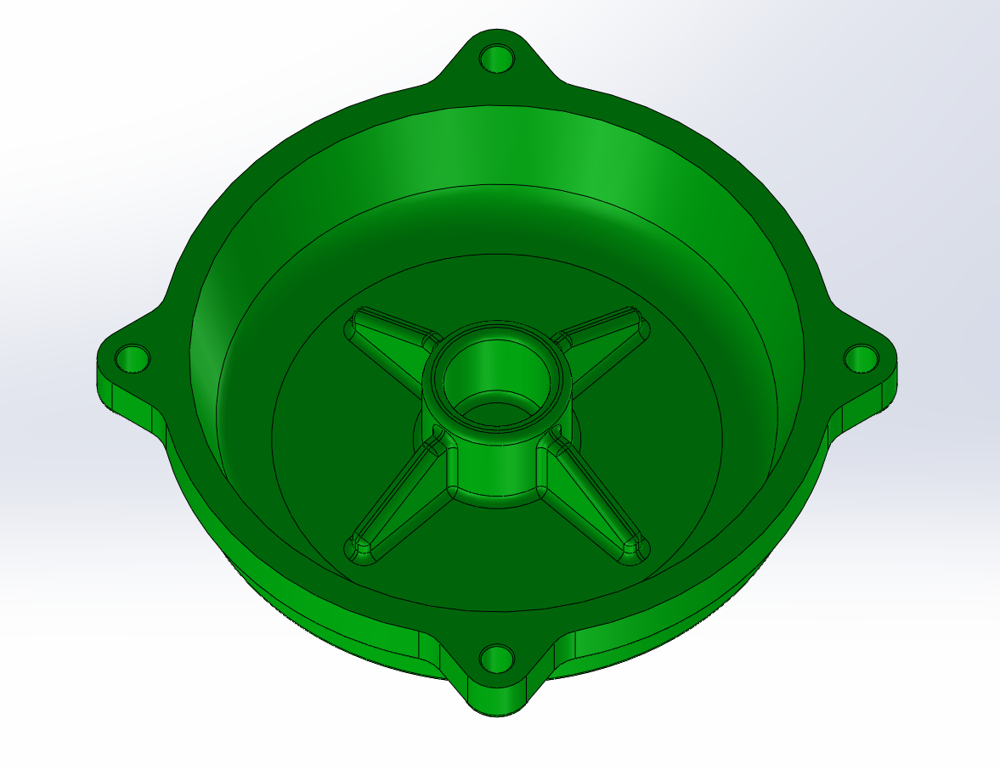

Matthew Nizich
Mechanical Engineering Student at Boston University
About Me
My name is Matthew Nizich, and I am a junior studying Mechanical Engineering at Boston University. I’m passionate about robotics, mechanical systems, and hands-on design, with a strong interest in making agile and autonomous mechanical systems.
Outside of academics, I’ve spent time mentoring and teaching students in robotics and electronics, leading week-long courses where I guide them through engineering principles using elements such as Arduino, truss designs, and CAD.
In my spare time I enjoy practicing Kendo and tinkering with my hobby builds and art pieces, which often leads me back to the lab I work at anyway thanks to all the wonderful machinery available there. As a lab advisor in my university's makerspace, my workplace is where I have honed my skills with 3D printing, laser cutting, and a wide range of other machinery.
I also spend time in the workshop as a member of the mechanical team for the Mars Rover Club, applying my mechanical and problem-solving skills to collaborative design challenges. I am excited to continue expanding my knowledge and applying my skills to innovative engineering projects.
CAD Portfolio


 

A variety of models built for my ME357 CAD class.

FEA analysis of a nozzle geometry.

A CAD assembly of a ball valve with moving components.
Contact
Email: mnizich@bu.edu
LinkedIn: linkedin.com/in/matthewnizich
GitHub: github.com/mnizich